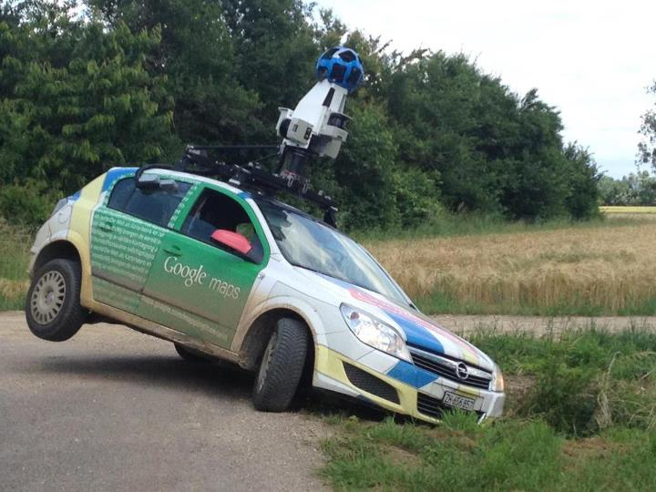

Processing: a tool for data viz and mapping
Processing logo

"Processing is a programming language, development environment, and online community."
"Since 2001, Processing has promoted software literacy within the visual arts and visual literacy within technology."
"Initially created to serve as a software sketchbook and to teach computer programming fundamentals within a visual context,
Processing evolved into a development tool for professionals."
"Today, there are tens of thousands of students, artists, designers, researchers, and hobbyists who use Processing for learning, prototyping, and production."
~Processing.org
who am i?
Daniel M. Sheehan
Geographer/GIS Analyst
I mostly program in python...
...use ArcGIS and other GIS software packages...
...though I have no formal training. And :disclaimer: I make no claims of having expertise in Java, Javascript, or Processing.
So why am I here?
I'm sure many of you know from this course or your own experience...
...that sometimes the tool (be it a language or software package) you are most
familiar with is not always the best
tool for the

Sometimes we make mistakes...
...and use the wrong tool.
A few years ago I became somewhat interested in showing geographic data over time.
The only software I knew well at that time was ArcGIS and the Microsoft Office suite and was just beginning to use Python.
My first stab at the problem was trying use the WNYC Map Your Moves dataset...
Which comprised of Origin and Destination ZIP codes of WNYC listeners